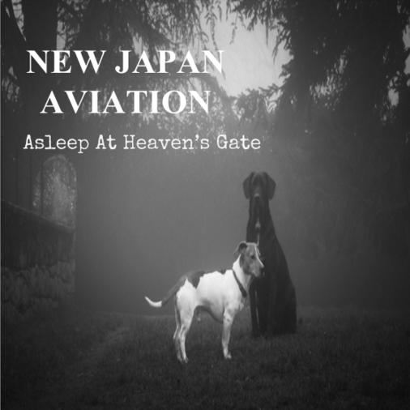

Challenge: Design a Band
Challenge Information
Design thinking is the ability to imagine the perspective and feeling of someone else for your idea. We are studying it to make something that will appeal to other people. The steps to design thinking is to discover, empathy, experiment and produce. You design your own creative ideas, while also having other people's ideas in mind. I tested my ideas out by asking people which colors and fonts they preferred and if they liked realistic or abstract images better. The people I interviewed showed to like darker colors, more realistic images and a serif font. I chose the colors of my album, my album picture and font based off of other people's ideas and what they liked better.
Album Cover
Band Biography
New Japan Aviation consists of two British and two Japanese band members: Andy Dwyer, Tom Haverford, Ron Swanson and April Ludgate. Andy and Ron were raised in England, while April and Tom were raised in Japan, but all four of the grew up listening to alternative rock. In 2012, they met in Kings College, London and decided to pursue music by forming an alternative genre band. The band name comes from a Japanese airline that provides flight to Sado Island, where April and Tom lived before they moved to England for college. Their first album, Finding Way, is about discovering who they were and what they wanted in the world, which was a big part of all of their lives while writing it in college. It debuted in the top 10 of the UK music charts and two years later they released another album, Asleep At Heavens Gate. This album is inspired by the idea of not knowing what lies ahead but having hope that whatever comes will be good, regardless of where one is currently at in their life. The band wanted to create something that people will be able to relate to, and give them hope for the future.
Unfortunately, tragedy struck Andy when his two beloved dogs died in 2014, while New Japan Aviation were writing their second album. His dogs have been with him since he was a teen and were basically his two best friends throughout all the rough times in his life. All four members decided to display a form of happiness and hope for their new album cover with a picture of Andys dogs. The bands new album title and image symbolizes the good times in Andy’s life that are now in the past, and the hope that things will be good again. When people listen to the new album, they want them to be able to relate to that sense of happiness and hope.